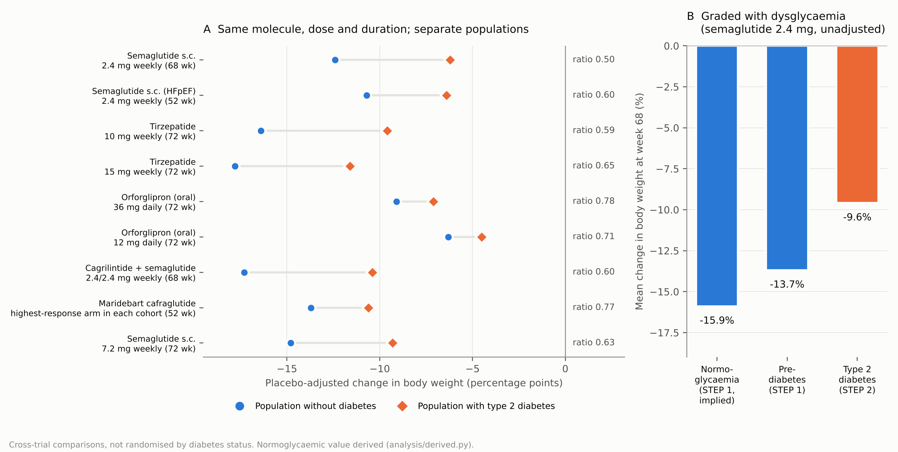
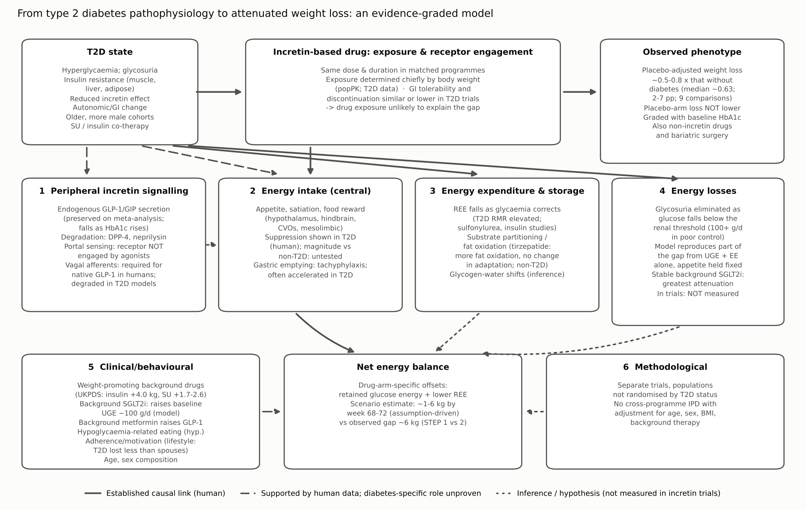

Narrative review informed by structured evidence retrieval. Draft for author review.
Clinical trials of incretin-based therapies consistently report smaller reductions in body weight in people with type 2 diabetes (T2D) than in people without diabetes. We asked how robust that observation is and which mechanisms can account for it. We identified nine comparisons in which the same molecule, dose, treatment duration and estimand were tested in separate populations with and without T2D: semaglutide (three programmes, including semaglutide 7.2 mg in STEP UP and STEP UP T2D), tirzepatide (two doses), orforglipron (two doses), cagrilintide–semaglutide and maridebart cafraglutide. In these comparisons the placebo-adjusted weight reduction in T2D was a median 0.63 (range 0.50–0.78) of that in populations without diabetes, an absolute difference of 2–7 percentage points. A prespecified pooled analysis of harmonised semaglutide heart-failure trials confirmed strong heterogeneity between the diabetes and non-diabetes populations (I² ≈ 96%). The deficit is graded across normoglycaemia, prediabetes and T2D, and it appears across agents with different receptor profiles. Placebo-arm weight change is not smaller in T2D, which places the deficit in the drug-attributable effect. Human studies show that incretin agonists suppress appetite in T2D, but no study has compared the magnitude of that suppression with that in people without diabetes. The peripheral apparatus around the receptor — endogenous secretion, degradation, and vagal afferent transmission — is measurably altered in T2D, and intact vagal innervation is required for native GLP-1 to suppress intake in humans; but incretin secretion is on average preserved and falls only with worsening glycaemic control, the portal afferent receptor appears not to be engaged by exogenous agonists, and prolonging native GLP-1 pharmacologically does not reduce weight. The deficit is also not specific to incretin drugs: it appears with pharmacotherapies acting on unrelated targets and after bariatric surgery, which argues against a receptor-level primary cause. Correction of hyperglycaemia removes urinary glucose energy losses and lowers resting energy expenditure. Our calculations from measured inputs suggest these offsets could account for roughly 1–6 kg by 68–72 weeks, and an independent energy-balance model — fitted to non-diabetic semaglutide response, then applied to T2D with appetite parameters held fixed — partially reproduces the observed gap from these terms alone and predicts that stable background SGLT2 inhibition should cause the greatest attenuation. Neither component has been measured in an incretin trial. Co-prescribed weight-promoting drugs, differences in age and sex, and behavioural factors probably contribute. Evidence for an intrinsic, insulin-resistance-driven resistance to incretin pharmacology is weak. The most important missing evidence is an energy-balance study, under matched conditions, that measures intake, expenditure and urinary energy losses in people with and without T2D receiving the same agent.
Keywords: incretin; GLP-1 receptor agonist; tirzepatide; semaglutide; type 2 diabetes; obesity; energy balance; glycosuria; vagal afferent; autonomic neuropathy
Medicines that act on the glucagon-like peptide-1 (GLP-1) receptor were first developed to lower glucose. They amplify glucose-dependent insulin secretion and suppress glucagon. They later proved to be the most effective drug treatments for obesity, and newer molecules add activity at the glucose-dependent insulinotropic polypeptide (GIP), glucagon or amylin receptors [1,2]. The same drugs are therefore used for two related but distinct goals: correcting dysglycaemia and reducing adiposity.
A consistent observation accompanies this dual use. When one molecule is studied at the same dose and for the same duration in separate trials of people with and without T2D, the trials in T2D report smaller weight reductions. For semaglutide 2.4 mg the placebo-adjusted reduction at 68 weeks was 12.4 percentage points without diabetes [3] and 6.2 points with T2D [4]. Similar differences appear with tirzepatide [5,6], with the oral small-molecule agonist orforglipron [7,8] and with cagrilintide–semaglutide [9,10].
The difference matters clinically, because weight reduction of this size changes glycaemic, cardiovascular and functional outcomes in T2D, and smaller responses shape both expectations and choice of agent. It is also informative mechanistically. Glucose lowering and weight reduction are separate pharmacological outputs. Correcting hyperglycaemia depends mainly on islet effects, whereas weight reduction depends on a sustained negative energy balance. The mechanisms that correct dysglycaemia need not determine weight loss, and correcting dysglycaemia can itself change energy balance.
This review addresses two questions separately. The clinical question is how confidently we can conclude that T2D is associated with less weight loss on comparable incretin-based therapy, and how large the difference is. The mechanistic question is which physiological or pharmacological processes could explain the difference, and which have actually been shown to do so. We consider four classes of explanation: (1) direct modification by T2D of the response to receptor agonism, whether centrally or through the peripheral secretory, degradative and afferent machinery that surrounds the receptor; (2) indirect metabolic effects of glycaemic correction on energy balance; (3) clinical and behavioural factors, including co-prescribed medicines; and (4) methodological artefacts arising from comparisons between trials. Throughout, we distinguish established causal links, supportive human evidence, indirect inference and hypotheses.
The evidence was assembled through structured searches of PubMed/MEDLINE and ClinicalTrials.gov, with backward citation tracking from pivotal trials. Every quantitative claim was checked against the primary abstract or, where accessible, the full text. This is a narrative review; it is not a systematic review and makes no claim of exhaustive screening (see Supplementary Methods and the quality-control report).
Three kinds of evidence bear on the question, and they differ in strength. The strongest would be a randomised trial that stratifies by diabetes status and formally tests whether the treatment effect differs between strata (effect modification). No such trial has been designed for weight as its primary question. The next best are comparisons in which one protocol, or harmonised protocols, enrolled both populations, ideally analysed together from individual participant data (IPD). Weakest, but most plentiful, are comparisons of separate trials of the same molecule, dose, duration and estimand within one development programme. Comparisons of mean weight change between unrelated trials cannot distinguish an effect of diabetes from differences in population, background therapy or trial conduct. They also cannot show that individual patients respond differently, as opposed to populations differing on average.
Table 1 summarises the matched comparisons, and Figure 1A shows them graphically. All use treatment-policy or treatment-regimen estimands, which count outcomes regardless of discontinuation, so the comparisons are not distorted by differences in persistence.
For semaglutide 2.4 mg weekly over 68 weeks, STEP 1 (no diabetes; baseline weight 105.3 kg, BMI 37.9 kg/m², HbA1c 5.7%) reported −14.9% versus −2.4% with placebo, an estimated treatment difference (ETD) of −12.4 percentage points [3]. STEP 2 (T2D; HbA1c 7–10%) reported −9.6% versus −3.4%, an ETD of −6.2 points [4]. The same pattern recurs at a higher dose in a later pair of trials from the same programme. STEP UP (no diabetes, n=1407; baseline weight 113.0 kg, BMI 39.9 kg/m², 73.7% women) reported −18.7% with semaglutide 7.2 mg versus −3.9% with placebo, an ETD of −14.8 points [11]. STEP UP T2D (n=512; baseline weight 110.1 kg, BMI 38.6 kg/m², HbA1c 8.1%, 51.8% women) reported −13.2% versus −3.9%, an ETD of −9.3 points [12]. This is the cleanest matched pair available: same sponsor, dose, duration and estimand, and an identical placebo-arm weight change of −3.9% in both populations. For tirzepatide over 72 weeks, SURMOUNT-1 (no diabetes) reported −19.5% at 10 mg and −20.9% at 15 mg versus −3.1% with placebo [5]. SURMOUNT-2 (T2D; mean HbA1c 8.02%, diabetes duration 8.5 years) reported −12.8% and −14.7% versus −3.2% [6]. For orforglipron 36 mg over 72 weeks the results were −11.2% versus −2.1% without diabetes [7] and −9.6% versus −2.5% with T2D [8]. For cagrilintide–semaglutide over 68 weeks they were −20.4% versus −3.0% (ETD −17.3) [9] and −13.7% versus −3.4% (ETD −10.4) [10]. Liraglutide 3.0 mg showed the same direction: a placebo-adjusted −5.6 kg without diabetes [13] and −4.2 kg with T2D [14], from similar baseline weights (about 106 kg).
Several other programmes point the same way but cannot be matched as cleanly. With retatrutide, a GIP/GLP-1/glucagon receptor tri-agonist, phase 2 weight loss reached 24.2% at 48 weeks in obesity [15] and 16.9% at 36 weeks in T2D [16]. The durations differ, so the comparison is only qualitative. Oral semaglutide 50 mg produced a 15.1% reduction (ETD −12.7) in people without diabetes [17]. The corresponding T2D trial of 25 and 50 mg had no placebo arm [18]. In the SURPASS and SUSTAIN programmes in T2D, doses were chosen for glycaemic control and comparators were active. Weight reductions were 7.0–9.5 kg with tirzepatide monotherapy over 40 weeks [19], 1.9–5.5 kg greater with tirzepatide than with semaglutide 1 mg [20], and only 0.9 kg greater with semaglutide 2.0 mg than with 1.0 mg [21]. These T2D trials show that weight response rises with dose and potency in diabetes. They do not provide a matched comparator without diabetes.
Across the nine percentage-based comparisons, the placebo-adjusted reduction in T2D was a median 0.63 times that without diabetes (range 0.50–0.78). The absolute deficit was a median 5.5 percentage points (range 1.8–6.9) (Table 1; analysis/derived.py). Two features stand out. First, the ratio is broadly similar for selective GLP-1 receptor agonists, the GIP/GLP-1 co-agonist tirzepatide and the amylin–GLP-1 combination. Second, placebo-arm weight change was not smaller in T2D (−3.4% vs −2.4% for semaglutide 2.4 mg; −3.9% vs −3.9% for semaglutide 7.2 mg; −3.2% vs −3.1% for tirzepatide; −2.5% vs −2.1% for orforglipron; −3.4% vs −3.0% for cagrilintide–semaglutide). The deficit therefore lies in the drug-attributable component rather than in the response to the lifestyle programme delivered to both arms.
The STEP-HFpEF programme provides the closest available approach to a direct test. Two trials with harmonised eligibility criteria, endpoints and analyses enrolled people with obesity-related heart failure with preserved ejection fraction, one without diabetes and one with T2D. Both gave semaglutide 2.4 mg for 52 weeks. Weight change was −13.3% versus −2.6% without diabetes (ETD −10.7) [22] and −9.8% versus −3.4% with T2D (ETD −6.4) [23]. The prespecified IPD pooled analysis found substantial heterogeneity between the trials for weight (p<0.0001; I² 95.8%), whereas improvements in heart-failure symptoms were consistent [24]. The authors note roughly 40% less weight loss with diabetes. Even here, diabetes status was not randomised, and the trials differed in recruitment and background therapy.
The phase 2 trial of maridebart cafraglutide, which combines GLP-1 receptor agonism with GIP receptor antagonism, enrolled an obesity cohort and an obesity-with-T2D cohort under one protocol [25]. At 52 weeks, weight change ranged from −12.3% to −16.2% (placebo −2.5%) in the obesity cohort and from −8.4% to −12.3% (placebo −1.7%) in the T2D cohort. The dosing arms were not identical between cohorts, and the T2D cohort was older (55.1 vs 47.9 years) and included fewer women (42% vs 63%).
Observational data point the same way. In a referral-centre cohort treated with semaglutide 1.7–2.4 mg, people with T2D lost 7.2% versus 11.8% at 6 months [26]. In a large propensity-matched electronic-record cohort, people without T2D lost more weight than people with T2D on both tirzepatide and semaglutide. The authors explicitly raise differences in motivation and concurrent weight-loss activity as possible explanations [27].
The gradient also appears within T2D, indexed by glycaemic control rather than by diabetes status. In SURMOUNT-2, weight reduction with tirzepatide varied meaningfully by baseline HbA1c category [28], and pooled patient-level analyses of the SUSTAIN programme found baseline characteristics including glycaemia to modify the weight response to semaglutide [29]. The direction is consistent: higher baseline HbA1c, smaller weight reduction. This within-disease gradient is the single most informative feature of the phenotype, because it is the common prediction of every mechanism that scales with glycaemia — the energetic offsets of Section 9 above all — and it is not predicted by an explanation resting on diabetes status as a category.
In a post hoc analysis of STEP 1, participants with prediabetes lost 13.7% with semaglutide (ETD −11.3) [30], compared with 14.9% in the whole semaglutide arm [3]. Assuming the overall mean is the weighted average of the subgroup means, normoglycaemic participants lost about 15.9%. Normoglycaemia (~15.9%), prediabetes (13.7%) and T2D (9.6%) therefore form a graded series on the same dose and duration (Figure 1B). The gradient is unadjusted and comes from different trials, so it does not establish dose–response causation. It does argue against a threshold effect confined to overt diabetes. Its presence in prediabetes, where glycosuria is negligible, also limits how much of the gap any glycosuria-based explanation alone can carry (Section 9). In SURMOUNT-1, participants with prediabetes still lost 18.7–19.7% with tirzepatide 10–15 mg over 176 weeks [31], so large responses remain achievable in dysglycaemia.
A phenotype confined to incretin pharmacology would point to the receptor. A phenotype that appears whenever weight is lost by any means points to the host. The evidence favours the second, and this bears directly on which mechanisms in Sections 5 to 10 can be primary.
Smaller weight reductions in T2D have been reported with three non-incretin pharmacotherapies acting on entirely unrelated targets. Naltrexone–bupropion produced −5.0% versus −1.8% with placebo in T2D (ETD −3.2) [32], against larger reductions in the non-diabetes COR programme [33]. Lorcaserin, a 5-HT2C agonist, produced −4.5% to −5.0% versus −1.5% in BLOOM-DM (ETD about −3.0) [34], again below the non-diabetes BLOOM result [35]. Phentermine–topiramate shows the same direction [36]. Bariatric surgery likewise: preoperative diabetes is a recognised predictor of smaller long-term weight loss [37]. None of these acts on the GLP-1 or GIP receptor, and surgery is not a drug at all.
Dietary restriction is the informative exception, and it cuts both ways. In a 36-day metabolic-ward study at a fixed 300 kcal/day, participants with T2D lost 308 ± 19 g/day versus 450 ± 31 g/day in non-diabetic participants (p<0.01) — but the non-diabetic group began with significantly greater body weight and lean mass, which the authors note as a confounder [38]. Behavioural programmes showed the same direction [39]. Against this, a systematic review and meta-analysis of five low-energy formula-diet studies (n=569) found no significant difference in final weight loss between people with and without T2D: −1.2 kg (95% CI −4.1 to 1.6), with near-identical rates of loss (0.6 vs 0.5 kg/week) [40].
Two readings of that null are possible. It may mean the gap is specific to pharmacotherapy and surgery and absent under enforced energy restriction. Or the meta-analysis may be underpowered and dominated by individual studies, as has been argued [41]. We cannot settle this from the published data. What matters for the present argument is the asymmetry: the gap appears across drug classes with no shared receptor and after surgery, which makes a receptor-level or incretin-signalling defect an unlikely primary cause, and correspondingly raises the weight of explanations rooted in the energetics of the diabetic state itself [42].
Note that the Henry study is also a direct, if small, demonstration of the energetic mechanism at work: fasting glucose fell from 291 to 95 mg/dL in the diabetic participants over the 36 days, closing a large glycosuric energy leak, at fixed intake (Section 9).
Several features of the trials argue against a purely methodological explanation.
Other differences do favour the trials without diabetes. The T2D trials enrol older participants with a higher proportion of men. Women lost more weight in the STEP-HFpEF pool [24]; STEP 1 enrolled 74.1% women and SURMOUNT-2 50.7% [3,6]. T2D participants also continued glucose-lowering drugs, including sulfonylureas in 26.7% of SURMOUNT-2 participants [6]. No analysis has pooled IPD across programmes with adjustment for age, sex, baseline BMI, HbA1c, diabetes duration and background therapy. Without one, the share of the gap attributable to these population differences cannot be quantified.
The clinical phenotype is robust. It appears in every matched programme, in harmonised IPD, in a single-protocol trial and in observational cohorts, and it is graded with glycaemic status. On average, people with T2D achieve about 50–80% (median ~60%) of the placebo-adjusted weight reduction seen without diabetes. The absolute shortfall is about 2–7 percentage points at 52–72 weeks, larger with the most potent agents. Because the deficit occurs in the drug-attributable component, and across GLP-1 receptor agonists, GIP receptor agonism and antagonism, amylin co-agonism and lifestyle intervention [39], it is more likely to reflect host physiology and context than a defect specific to one receptor. What the evidence cannot yet establish is how much of the population difference is effect modification by diabetes itself rather than confounding by co-varying traits.
Table 1. Matched comparisons of incretin-based therapies in populations with and without T2D. Nine percentage-based comparisons; median ratio 0.63, range 0.50–0.78. Values are mean % change in body weight from baseline to end of treatment (drug vs placebo). ETD = estimated treatment difference (percentage points). TP = treatment-policy estimand; TR = treatment-regimen estimand.
| Agent and dose | Weeks | Population without diabetes (trial; key baseline) | Drug vs placebo; ETD | Population with T2D (trial; key baseline; background therapy) | Drug vs placebo; ETD | Ratio T2D/no-T2D (ETD) |
|---|---|---|---|---|---|---|
| Semaglutide 2.4 mg weekly | 68 | STEP 1, n=1961; 105.3 kg, BMI 37.9, HbA1c 5.7%, 74% women [3] | −14.9 vs −2.4; −12.4 (−13.4 to −11.5), TP | STEP 2, n=1210; HbA1c 7–10%; 0–3 oral agents [4] | −9.6 vs −3.4; −6.2 (−7.3 to −5.2), TP | 0.50 |
| Semaglutide 7.2 mg weekly | 72 | STEP UP, n=1407; 113.0 kg, BMI 39.9, 73.7% women, age 47 [11] | −18.7 vs −3.9; −14.8 (−16.2 to −13.4), TP | STEP UP T2D, n=512; 110.1 kg, BMI 38.6, HbA1c 8.1%, 51.8% women, age 56; ~30% on SGLT2i [12] | −13.2 vs −3.9; −9.3 (−11.0 to −7.7), TP | 0.63 |
| Semaglutide 2.4 mg weekly (HFpEF) | 52 | STEP-HFpEF, n=529 [22] | −13.3 vs −2.6; −10.7 (−11.9 to −9.4) | STEP-HFpEF DM, n=616; HbA1c ≤10% [23] | −9.8 vs −3.4; −6.4 (−7.6 to −5.2) | 0.60 (IPD heterogeneity p<0.0001) [24] |
| Tirzepatide 10 mg weekly | 72 | SURMOUNT-1, n=2539; 104.8 kg, BMI 38.0 [5] | −19.5 vs −3.1; −16.4*, TR | SURMOUNT-2, n=938; 100.7 kg, BMI 36.1, HbA1c 8.02%, duration 8.5 y; metformin 89%, SU 27%, SGLT2i 20% [6] | −12.8 vs −3.2; −9.6 (−11.1 to −8.1), TR | 0.59 |
| Tirzepatide 15 mg weekly | 72 | SURMOUNT-1 [5] | −20.9 vs −3.1; −17.8*, TR | SURMOUNT-2 [6] | −14.7 vs −3.2; −11.6 (−13.0 to −10.1), TR | 0.65 |
| Orforglipron 36 mg daily (oral) | 72 | ATTAIN-1, n=3127 [7] | −11.2 vs −2.1; −9.1*, TR | ATTAIN-2, n=1613; 101.4 kg, BMI 35.6, HbA1c 8.05% [8] | −9.6 vs −2.5; −7.1 (−8.2 to −6.1), TR | 0.78 |
| Orforglipron 12 mg daily (oral) | 72 | ATTAIN-1 [7] | −8.4 vs −2.1; −6.3*, TR | ATTAIN-2 [8] | −7.0 vs −2.5; −4.5, TR | 0.71 |
| Cagrilintide 2.4 mg + semaglutide 2.4 mg weekly | 68 | REDEFINE 1, n=3417 [9] | −20.4 vs −3.0; −17.3 (−18.1 to −16.6), TP | REDEFINE 2, n=1206; HbA1c 7–10% [10] | −13.7 vs −3.4; −10.4 (−11.2 to −9.5), TP | 0.60 |
| Maridebart cafraglutide (highest-response arm) | 52 | Obesity cohort, n=465; BMI 37.9, 63% women [25] | −16.2 vs −2.5; −13.7*, TP | Obesity–T2D cohort, n=127; BMI 36.5, 42% women [25] | −12.3 vs −1.7; −10.6*, TP | 0.77 (dose arms differ) |
| Liraglutide 3.0 mg daily | 56 | SCALE Obesity & Prediabetes, n=3731; 106.2 kg [13] | −8.4 vs −2.8 kg; −5.6 kg | SCALE Diabetes, n=846; 0–3 oral agents [14] | −6.0% (−6.4 kg) vs −2.0% (−2.2 kg); −4.0 (−5.1 to −2.9) | 0.75 (kg basis) |
*ETD calculated as drug minus placebo from published means; confidence interval not reported in the abstract. SU, sulfonylurea; SGLT2i, sodium–glucose co-transporter 2 inhibitor. Ratios computed in analysis/derived.py.
Endogenous GLP-1 and GIP are short-lived peptides secreted after meals. Both potentiate glucose-stimulated insulin secretion. GLP-1 also suppresses glucagon, slows gastric emptying and reduces food intake [1]. In T2D the incretin effect, the extra insulin secreted after oral compared with intravenous glucose at matched glycaemia, is markedly reduced: incretin factors accounted for 36% of the insulin response in T2D versus 73% in matched controls [46]. The defect is largely a consequence of the diabetic state rather than its cause. It appears in diabetes secondary to chronic pancreatitis but not in pancreatitis with normal glucose tolerance [47]. Four weeks of near-normoglycaemia improved the late-phase β-cell response to GLP-1 and GIP three- to fourfold [48].
These findings concern the endocrine pancreas at physiological hormone concentrations. They do not imply reduced responsiveness to long-acting agonists at pharmacological exposures. Infused GLP-1 retained most of its insulinotropic activity in mild T2D, whereas the insulinotropic effect of GIP was reduced by 54% [49]. GIP also failed to amplify late-phase secretion [50]. Graded GLP-1 infusions increased β-cell glucose responsiveness in T2D, but at each dose the response was 3–5 times smaller than in controls. Even so, a low dose restored responsiveness to the level of untreated controls [51]. A reduced physiological incretin effect is therefore a statement about the islet. It says nothing direct about the brain and gut circuits through which agonists reduce energy intake.
The glucose-lowering effects of incretin drugs arise mainly from islet mechanisms (insulin secretion and glucagon suppression), from slower gastric emptying of meal glucose, and secondarily from weight reduction and improved insulin sensitivity. In a mechanistic study in T2D, tirzepatide improved the clamp disposition index, total insulin secretion, insulin sensitivity (M value) and glucagon suppression more than semaglutide 1 mg [52]. Weight reduction, by contrast, depends on a sustained negative energy balance. That balance is driven mainly by reduced energy intake, with little or no increase in energy expenditure in humans (Sections 4 and 10). Both outputs share the receptor but not the effector organs. This is why a drug can improve glycaemia without changing weight, as low-dose liraglutide (0.6 mg) did in an 8-week respiratory-chamber study in T2D [53], and why glycaemic correction can feed back on energy balance (Section 9).
Long-acting peptide agonists achieve sustained plasma concentrations far above endogenous GLP-1. Within T2D, semaglutide exposure varies mainly with body weight [43]. Oral and subcutaneous formulations show nearly identical exposure–response relationships for HbA1c and body weight, which suggests that variation between individuals in GLP-1 receptor responsiveness is not a major determinant of response [44]. Agents differ in other ways. Tirzepatide engages the GIP receptor more than the GLP-1 receptor at clinical doses, and at the GLP-1 receptor it favours cAMP signalling over β-arrestin recruitment and causes less receptor internalisation [54]. Orforglipron is a non-peptide oral agonist [7]. Cagrilintide adds amylin receptor agonism [9]. Maridebart cafraglutide pairs GLP-1 agonism with GIP receptor antagonism [25]. Despite these differences, the attenuation ratio in T2D is similar across agents (Table 1). That similarity is the first indication that the explanation lies mainly in the host rather than in a receptor-specific pharmacodynamic defect.
Reduced energy intake is the dominant driver of incretin-induced weight loss. In adults with obesity, semaglutide 1.0 mg reduced ad libitum energy intake across a test day by 24%, with less hunger and food craving, better control of eating and a lower preference for high-fat foods. Resting metabolic rate adjusted for lean mass did not change [55]. Semaglutide 2.4 mg reduced ad libitum lunch intake by 35% after 20 weeks [56]. Tirzepatide reduced intake at an ad libitum lunch by about 525 kcal at week 3 in adults without diabetes. It also reduced food cravings, the tendency to overeat and responsiveness to food cues, and reduced activation to high-fat, high-sugar food images in orbitofrontal, cingulate and hippocampal regions [57]. In humans, GLP-1 receptors have been identified on neurons of the hypothalamus, medulla and parietal cortex [58].
Animal studies define the circuitry. Peripherally administered semaglutide does not cross the blood–brain barrier. It reaches circumventricular organs and periventricular sites, activates hindbrain and hypothalamic neurons, and engages secondary nodes such as the lateral parabrachial nucleus. In rodents it reduces intake without lowering energy expenditure [59]. Liraglutide directly activates arcuate POMC/CART neurons and indirectly inhibits NPY/AgRP neurons through GABAergic transmission. Its weight-lowering effect persisted after loss of GLP-1 receptors in vagal afferents, area postrema or paraventricular nucleus [60]. Other work shows that vagal afferent and central receptor populations both contribute, because vagal deafferentation shifts the dose–response curve [61]. The pharmacological effect is also separable from the endogenous brainstem preproglucagon system. Those neurons are the predominant source of GLP-1 within the brain, but their ablation left ad libitum intake, body weight and glucose tolerance unchanged in mice, affecting intake only after a prolonged fast or a liquid preload and abolishing stress-induced hypophagia — a secondary satiation circuit rather than a primary regulator [62] — and they are not required for the anorexia induced by GLP-1 receptor agonists [63]. These rodent data describe pathways. They do not show that any pathway behaves differently in human T2D. The peripheral limb of the same circuitry, including vagal afferent transmission and the endogenous incretin background on which the drug is superimposed, is considered separately in Section 5.
Three types of evidence should be kept apart.
Incretin agonism suppresses appetite in T2D. This is well supported. Intravenous GLP-1 reduced energy intake by 27% in T2D [64]. Liraglutide 1.8 mg reduced ad libitum intake by 18% after 3 weeks [65]. Tirzepatide and semaglutide both reduced appetite in T2D over 28 weeks [66]. In a crossover fMRI study, exenatide reduced food intake and food-cue responses in insula, amygdala, putamen and orbitofrontal cortex in obese people with T2D as well as in normoglycaemic obese people, and receptor blockade with exendin 9-39 largely prevented these effects [67]. In T2D, liraglutide reduced insula and putamen responses to food pictures after 10 days but not after 12 weeks, relative to insulin glargine [68]. It also reduced parietal activation to highly desirable foods [58].
Whether appetite suppression is smaller in T2D is unknown. No study has compared ad libitum intake, appetite ratings or food-cue responses between people with and without diabetes receiving the same agonist under identical conditions. Apparent differences between studies, such as 27% with GLP-1 infusion in T2D versus 12% in healthy men [69], reflect different infusion rates, meals and populations and cannot be interpreted as effect modification.
Whether a difference in appetite suppression explains the weight-loss gap has therefore never been tested. One observation is suggestive. In T2D, tirzepatide produced more weight loss than semaglutide 1 mg, but intake at an ad libitum lunch did not differ between the drugs. The authors concluded that measured intake did not account for the difference in weight outcome [66]. A single test meal is an insensitive measure of 24-hour intake, so this finding should not be overinterpreted.
Several plausible mechanisms exist, but none has been linked to incretin response. In adults with obesity, MRI markers of mediobasal hypothalamic gliosis were greater in impaired glucose tolerance and T2D than in normal glucose tolerance, independent of adiposity. They correlated with glycaemia and insulin resistance [70]. Brain insulin resistance in obesity and T2D alters eating behaviour and reward processing [71]. In obese T2D and normoglycaemic obese participants, food-cue responses in appetite and reward regions were greater than in lean participants [67]. A larger baseline drive to eat would oppose a given pharmacological suppression. Whether gliosis, central insulin resistance or heightened food-cue reactivity reduces the magnitude of GLP-1-induced anorexia in T2D has not been studied. These remain hypotheses.
Weight loss provokes compensatory increases in appetite. In patients treated with canagliflozin, whose energy deficit comes from glycosuria without appetite suppression, calculated energy intake rose by about 100 kcal/day for each kilogram lost. That is more than three times the accompanying adaptation in energy expenditure [72]. A common interpretation, not directly tested in humans, is that incretin agonists shift the level at which this feedback operates. Under that model, any additional, drug-independent energy inflow in T2D, such as glucose energy previously lost in urine (Section 9), would act on this feedback system and lead to a higher weight plateau.
Section 4 considered the brain. This section considers everything upstream of it: the endogenous incretin secreted by the gut, the enzymes that destroy it, the receptors it meets in the gut wall and hepatoportal bed, and the afferent nerves that carry the resulting signal. Each of these is altered in T2D. Whether any of it changes how a pharmacological agonist performs is a separate question, and the answer turns on a single issue of pharmacology that we take first.
A long-acting agonist does not need endogenous GLP-1 to activate the GLP-1 receptor. It reaches sustained plasma concentrations far above physiological ones (Section 3.3), and it is engineered to resist the enzymatic degradation that limits the native peptide [73]. On the simplest reading, the state of the endogenous system is therefore irrelevant to drug effect, and reduced native secretion in T2D would predict a larger relative response to an agonist, not a smaller one.
Two considerations complicate that reading. First, endogenous GLP-1 acts substantially where it is released. Native GLP-1 has a circulating half-life of minutes, and a large fraction of an intravenous bolus is inactivated before it leaves the portal circulation [74,75]. Much of its physiological action is therefore paracrine and neural, exerted on receptors in the gut wall and hepatoportal bed before the peptide reaches the systemic circulation at all [74]. A drug delivered subcutaneously arrives at those same receptors from the systemic side, at different concentrations and without the postprandial timing. Second, the pathway that carries the signal onward — vagal afferent fibres and their brainstem targets — is itself a structure that diabetes damages (Section 5.5). If the drug’s effect depends partly on that pathway, then degrading the pathway could degrade the drug effect regardless of receptor occupancy.
The peripheral hypothesis, then, is not that T2D leaves too little endogenous GLP-1 for the drug to work with. It is that T2D may erode a paracrine and neural substrate on which part of the agonist’s anorectic effect depends, and may remove a physiological signal that normally works alongside it.
Individual studies support reduced GLP-1 secretion in T2D. In 54 patients with T2D compared with 33 controls with normal glucose tolerance, the 4-hour meal GLP-1 response was lower (area under the curve 2482 ± 145 versus 3101 ± 198 pmol/L × 240 min; p = 0.024), and a model including diabetes, BMI, male sex and other terms explained 42% of the variance in that response [76]. In a meal study of eight obese patients with T2D against eight matched obese healthy participants, GLP-1 responses were reduced in T2D while GIP responses were normal [77].
Systematic evidence qualifies this substantially. A meta-analysis of 22 trials and 29 stimulation tests (275 patients with T2D, 279 controls) found no significant difference in total GLP-1 responses by any measure — peak concentration, total or incremental area under the curve, or their time-corrected equivalents [78]. A companion meta-analysis of 23 trials found GIP secretion likewise preserved [79]. The authors concluded that patients with T2D do not in general show reduced incretin secretion.
The qualification that survives is the one that matters most here. In both meta-analyses, meta-regression showed that HbA1c and fasting plasma glucose predicted the incremental GLP-1 response, and HbA1c predicted GIP responses negatively [78,79]. Reduced secretion is thus not a property of having diabetes but a function of how poorly controlled it is. This matters for two reasons. It means a uniform secretory deficit cannot be assumed in trial populations, whose mean HbA1c was around 8% (Table 1). And it predicts a graded rather than threshold relationship, which is the shape the clinical phenotype actually has (Section 2.4). The same logic applies at the islet: near-normalisation of glycaemia for four weeks improved the β-cell response to both GLP-1 and GIP three- to fourfold [48], and in rat islets chronic hyperglycaemia reduced GLP-1 and GIP receptor expression reversibly [80].
Dipeptidyl peptidase-4 (DPP-4) cleaves GLP-1(7–36) amide to an inactive form and is expressed on endothelium throughout the portal and systemic circulation [74]. Higher DPP-4 activity would lower the active fraction of endogenous GLP-1 reaching paracrine and portal receptors — a second reduction compounding any secretory deficit.
The human evidence is weaker than it is often presented. In 985 people with newly diagnosed T2D, plasma DPP-4 activity correlated positively with HbA1c and HOMA-IR, and those in the highest activity quartile had worse metabolic profiles [81]. This is a cross-sectional association within T2D; it does not establish that activity is higher than in people without diabetes. A 12-week exercise and weight-loss intervention in 14 older adults with metabolic syndrome lowered plasma DPP-4 by 10%, and the fall correlated with improved clamp-derived insulin sensitivity (r = −0.59) [82] — an intervention study with no non-diabetic comparator, n = 14, and no measurement of GLP-1 or body weight. Neither study supports a quantitative claim about how much active GLP-1 is lost.
Two mechanistic observations are nonetheless informative about where degradation matters. In mice, blood-glucose lowering after the DPP-4 inhibitor anagliptin correlated with small-intestinal DPP-4 inhibition (r = 0.949) but not with plasma DPP-4 inhibition, in both normal and diabetic models, with intact GLP-1 rising in the portal circulation [83]. And neprilysin, upregulated in obesity and T2D, also degrades GLP-1: high-fat-fed neprilysin-deficient mice had higher active GLP-1 (5.8 ± 1.1 versus 3.5 ± 0.8 pmol/L), lower plasma DPP-4 activity and better glucose tolerance [84]. Both findings locate the degradative bottleneck in the gut and portal bed rather than the systemic circulation. Both are rodent studies, and the neprilysin result is a genetic deletion, not pharmacological inhibition.
The clinical counterpoint is decisive for the drug question. DPP-4 inhibitors raise endogenous active GLP-1 and improve glycaemia, yet produce negligible weight loss. Prolonging the residence of native GLP-1 is therefore not sufficient to reduce body weight, which bounds how much any degradation-based mechanism can contribute to a weight-loss deficit.
GLP-1 receptors are expressed on vagal afferent neurons of the nodose ganglion, which project to the nucleus tractus solitarii and onward to hypothalamic feeding centres [61,75]. Three lines of animal work define the anatomy more precisely, and they do not all point the same way.
A portal glucose sensor exists and is GLP-1-receptor-dependent. Low-rate intragastric glucose in mice increased muscle glycogen synthesis by 30% and induced c-Fos in brainstem and hypothalamus, colocalising with arcuate NPY neurons. The response was diminished by central exendin 9-39 and abolished in GLP-1 receptor knockout mice — and, importantly, high-fat feeding prevented it entirely [85]. Related work implicates intestinal gluconeogenesis in generating the portal glucose signal detected by periportal afferents [86]. Note that the receptor dependence demonstrated in this model was central, not portal.
But the hepatoportal branch is not the required route. Selective ablation of the common hepatic branch of the vagus did not abolish the GLP-1-receptor-mediated incretin response or GLP-1’s suppression of intake in rats, whereas complete subdiaphragmatic vagal deafferentation did [87]. The authors concluded that what matters is paracrine signalling on GLP-1 receptors borne by vagal afferents of general gastrointestinal origin, not the hepatoportal bed specifically.
And circulating GLP-1 may not need vagal afferents at all. Intravenous GLP-1 reduced sucrose intake in rats undiminished by vagotomy or capsaicin treatment — in fact enhanced at the highest dose — with comparable hindbrain c-Fos induction in all groups [88]. The authors inferred that vagal participation is limited to paracrine effects near the sites of secretion, and that endocrine GLP-1 acts elsewhere. Conversely, the anorectic and glucose-tolerance effects of the GLP-1-releasing sweetener D-allulose were blunted by vagotomy, GLP-1 receptor blockade and vagal-afferent-selective GLP-1 receptor inactivation [89], consistent with a vagal route for locally released GLP-1.
The most important finding for the present argument concerns receptor identity. In anaesthetised rats, intraportal GLP-1(7–36) amide at both periphysiological (0.2 pmol) and pharmacological (4.0 pmol) doses increased hepatic vagal afferent discharge. Exendin-4 did not, at any dose up to 40 pmol, and exendin 9-39 at more than 100-fold molar excess failed to block the response to GLP-1(7–36) amide [90]. The hepatic vagal reception of portal GLP-1 therefore appears to operate through a receptor pharmacologically distinct from the classical GLP-1 receptor — one that a GLP-1 receptor agonist does not engage. Consistent with this, intraportal exenatide in conscious dogs produced no insulin-independent effect on hepatic glucose metabolism [91].
This is a problem for the peripheral hypothesis, not a support for it, and it should be stated plainly. If the portal afferent pathway is not activated by exogenous agonists, then loss of endogenous portal signalling in T2D removes a physiological contribution that the drug was never supplying, in both populations. It would not blunt the drug’s effect; it would lower the baseline on which the drug acts. The receptor in question has also never been molecularly identified, the experiments are from 2000 in small numbers of anaesthetised rats, and no one has repeated them with a modern long-acting agonist. The claim should be treated as unresolved rather than established.
One human study bears directly on whether peripheral neural transmission is necessary for GLP-1’s effect on eating. Twenty men with truncal vagotomy and pyloroplasty and ten matched healthy controls received GLP-1(7–36) amide or saline during a standardised meal followed by an ad libitum meal. GLP-1 significantly reduced ad libitum food intake in controls but had no effect in the vagotomised group. It delayed gastric emptying in controls but not after vagotomy, and left insulin secretion unaffected in the vagotomised group while suppressing it in controls. Postprandial glucose fell by the same percentage in both groups, and peak postprandial GLP-1 concentrations were roughly fivefold higher after vagotomy [92].
This is the strongest available human evidence that intact vagal innervation is required for exogenous GLP-1 to reduce food intake. Its limitations are material. The participants were men with surgical vagotomy and pyloroplasty for ulcer disease, a far more complete and anatomically different lesion than diabetic autonomic neuropathy; pyloroplasty itself accelerates gastric emptying and confounds the intake measurement; the infusion delivered native GLP-1, not a long-acting agonist engineered to act systemically; and the study was not designed to measure body weight over time. It establishes that the vagal route can be rate-limiting for native GLP-1 in humans. It does not establish that partial vagal damage limits the effect of semaglutide or tirzepatide.
Autonomic neuropathy is common in T2D and begins early. In 806 patients with newly diagnosed T2D undergoing systematic assessment, cardiovascular autonomic neuropathy was present in 18.6% and somatic neuropathy in 21.2% [93]. Reported prevalence across populations and diagnostic methods ranges very widely, from a few per cent to the large majority, depending on the tests applied and the cohort studied [94]. Cardiovascular autonomic function is a proxy for vagal integrity, not a measure of the gastrointestinal afferent limb.
Direct evidence that the afferent limb is affected is largely preclinical or from type 1 diabetes. A post-mortem study found severe loss of myelinated fibres in the vagus nerve and sympathetic trunks, with ganglion cell changes and inflammatory infiltrates — but in five cases of early-onset insulin-dependent diabetes with established clinical autonomic failure [95], which limits its transfer to typical T2D trial populations. In db/db mice, morphometric fibre loss and shrinkage appeared across peripheral nerves, though changes in the vagus appeared late relative to other nerves [96].
Two animal studies address function in type 2 models specifically, and they are the most relevant of this group. In UCD-T2DM rats, orogastric glucose activated duodenal enterochromaffin, K and L cells, enteric neurons and vagal afferent neurons in prediabetic animals, but this activation was markedly reduced in recent-onset and 3-month diabetic animals, with reduced GLP-1 immunoreactivity (and preserved GIP) [97]. In insulin-resistant obese animals studied with a gallium-labelled GLP-1 receptor PET probe and single-neuron electrophysiology, portal vagal afferents failed to modulate firing during glucose infusion, alongside reduced GLP-1 receptor binding potential, most marked between the splenic vein and the hepatic inlet [98]. Both show that the gut–vagal glucose-sensing pathway degrades with the diabetic and insulin-resistant state. Neither administered a GLP-1 receptor agonist or measured body weight.
Only one study we identified blunted an agonist’s effect alongside peripheral pathway changes. In obese-prone and obese-resistant rats, intraperitoneal exendin-4 suppressed intake effectively in both strains on chow. On a high-energy, high-fat diet, obese-prone rats suppressed intake significantly less than obese-resistant rats at every dose tested. This was accompanied by downregulated GLP-1 receptor mRNA in the vagal nodose ganglia, lower plasma GLP-1, reduced intestinal GLP-1 protein and a reduced number of L cells in the distal ileum [99].
This is the closest existing analogue of the clinical observation: a dysmetabolic host showing reduced anorectic response to a GLP-1 receptor agonist, with a peripheral mechanism measured in the same animals. It is also a diet-induced obesity model rather than a diabetes model, the agonist is short-acting and given intraperitoneally, the endpoint is acute intake rather than sustained weight change, and the design cannot separate nodose receptor downregulation from the several other changes present.
Taken together, the peripheral evidence supports a coherent hypothesis and falls well short of establishing it.
In favour: the gut–vagal afferent pathway is measurably degraded in type 2 diabetic and insulin-resistant animals [97,98]; intact vagal innervation is required for native GLP-1 to reduce intake in humans [92]; agonist-induced anorexia is blunted in a dysmetabolic rodent host with nodose GLP-1 receptor downregulation [99]; and secretory and islet responses recover when glycaemia is corrected [48,78], which fits the graded clinical phenotype.
Against, or limiting: incretin secretion is on average preserved in T2D, with reduction confined to poorer glycaemic control [78,79]; the portal afferent receptor appears not to be engaged by agonists at all [90,91]; the hepatoportal branch is not the required route even for native GLP-1 [87]; circulating GLP-1 can suppress intake without vagal afferents [88]; central GLP-1 receptor populations are sufficient for agonist-induced anorexia in rodents [59,60]; and prolonging native GLP-1 with DPP-4 inhibition does not produce weight loss.
Four further arguments bound the contribution. The first and strongest is that the gap is not specific to incretin drugs at all (Section 2.5): it appears with naltrexone–bupropion, lorcaserin and phentermine–topiramate, none of which touches the GLP-1 or GIP receptor, and after bariatric surgery [32,34,36,37]. A defect in peripheral incretin signalling cannot explain a deficit that persists when no incretin drug is given. Whatever the peripheral axis contributes must sit on top of a mechanism that is common to all of these, and the energetics of glycaemic correction are the obvious candidate (Section 9).
Second, the cross-agent test used in Section 7.3 applies here too. If the deficit depended on the endogenous GLP-1 background or its degradation, it should be smaller for agents that bypass both. Orforglipron is a non-peptide small molecule that is not a DPP-4 substrate, and cagrilintide–semaglutide adds amylin receptor agonism; both show the deficit (ratios 0.71–0.78 and 0.60; Table 1). The attenuation is not confined to agents whose action depends on the native incretin axis. Third, almost all participants in the T2D trials were taking metformin — 89% in SURMOUNT-2 [6] — and metformin itself raises GLP-1 concentrations and alters the intestinal bile acid pool and microbiome [100]. The endogenous background in these populations is pharmacologically modified in the direction opposite to the hypothesised deficit. Fourth, drug exposure is not reduced in T2D: oral semaglutide bioavailability did not differ significantly between healthy participants and people with T2D, and subcutaneous exposure varies mainly with body weight [43,101].
The honest position is that the peripheral axis is a well-motivated, mechanistically detailed and almost entirely untested contributor. Its strongest form is not that agonists work less well on diabetic receptors, but that T2D removes a physiological, paracrine and neurally mediated component of satiation that normally operates alongside the drug, and that this loss is graded with glycaemic control. That proposition has never been measured in either population receiving an incretin agent. Section 12 sets out the studies that would test it, including the two most direct: whether baseline autonomic function or measured endogenous incretin secretion predicts weight response to an agonist, and whether the response differs in people with established vagal dysfunction.
GLP-1 slows gastric emptying acutely. With sustained receptor exposure this effect diminishes. Tachyphylaxis of the delay was evident by a second meal during an 8.5-hour GLP-1 infusion, together with loss of the associated vagal marker pancreatic polypeptide [102]. A continuous 24-hour infusion attenuated the delay, whereas intermittent exposure preserved it [103]. With long-acting agents the picture is mixed. After 20 weeks of semaglutide 2.4 mg, paracetamol absorption showed no delay [56]. Semaglutide 1.0 mg delayed only first-hour emptying [104]. Exenatide once weekly still slowed scintigraphically measured emptying of solids and liquids at 8 weeks [105]. Liraglutide 3.0 mg delayed solid emptying at 5 and 16 weeks in obesity, and the delay at 5 weeks correlated with weight loss at 16 weeks [106]. Tirzepatide’s delay of gastric emptying likewise waned with repeated dosing in healthy participants. In T2D, however, a residual delay persisted during dose escalation, and a long-acting GIP analogue alone did not affect emptying [107].
Diabetes affects this axis in ways that could push in either direction. Acute hyperglycaemia slows gastric emptying, as shown in type 1 diabetes under glucose clamp [108]. Diabetic autonomic neuropathy can cause gastroparesis [109]. The direction is not uniform, however, and the common assumption that diabetes means slow emptying is wrong as often as it is right. Among 108 patients with diabetes referred for upper gastrointestinal symptoms and tested by scintigraphy, emptying was abnormal in 56% but rapid in 37% and slow in only 19%; 40.3% of those with T2D had accelerated emptying at one hour [110]. Baseline emptying rate in a T2D trial population is therefore likely to be heterogeneous in both directions, which blunts any prediction that rests on it being uniformly delayed. The glucose-lowering effect of GLP-1 receptor agonism through slower gastric emptying depends on the baseline emptying rate [111,112]. If emptying is already slow in some people with T2D, the incremental slowing a drug can produce, and any satiation it adds, may be smaller. Conversely, correcting hyperglycaemia could speed emptying, partly offsetting the drug effect. Neither possibility has been tested against weight outcomes.
The weight of evidence suggests that gastric emptying contributes to early satiation and perhaps to variation between individuals in response [106]. It is not the principal mechanism of long-term weight loss, because weight loss continues after the delay has largely waned, and central receptor populations are sufficient for anorexia in animal models [59,60]. Gastrointestinal changes in T2D are therefore best regarded as a variable and probably minor modifier. They would need to be measured, together with weight, in both populations before they could be assigned any share of the gap. Tolerability, the clinically visible face of gut effects, does not appear worse in T2D trials (Section 2.6).
The insulinotropic action of GIP is reduced in T2D, both in peak effect [49] and in amplifying late-phase secretion [50]. Near-normalisation of glycaemia partly restores it [48]. In rat islets, chronic hyperglycaemia reduces expression of both GLP-1 and GIP receptors, and normalising glucose reverses the change [80]. This finding suggests a mechanism, but it is animal data. GIP has adipose actions in humans. Together with hyperinsulinaemia it increased subcutaneous adipose blood flow, glucose uptake, triglyceride hydrolysis and fatty-acid re-esterification [113]. Infused GIP did not reduce energy intake in overweight men, and adding GIP to GLP-1 did not enhance the GLP-1-induced reduction in intake [114].
In mice, hypothalamic cells expressing the GIP receptor suppress food intake when activated [115]. Central GIP receptors are required for the anorectic effect of acyl-GIP and for the greater efficacy of GLP-1/GIP co-agonism over GLP-1 alone [116]. In mice, rats and shrews, GIP receptor agonism attenuates GLP-1-induced emesis while preserving reduced food intake [117]. Paradoxically, GIP receptor antagonist antibodies also reduce weight and enhance GLP-1 agonist effects in rodents and non-human primates [118]. One explanation is that sustained agonism produces functional antagonism through receptor desensitisation, but this remains unresolved. At the receptor level, tirzepatide is biased in its signalling and engages the GIP receptor more than the GLP-1 receptor [54].
If reduced GIP receptor responsiveness in T2D blunted the extra weight loss attributable to GIP agonism, the ratio of T2D to non-T2D weight loss should be lower for tirzepatide than for selective GLP-1 receptor agonists. It is not: the ratio was 0.59–0.65 for tirzepatide and 0.50–0.60 for semaglutide (Table 1). The attenuation is also present with maridebart cafraglutide, which antagonises the GIP receptor (ratio about 0.77) [25], and with orforglipron, which has no GIP activity [8]. The weight deficit in T2D therefore does not depend on the direction of GIP receptor pharmacology. This makes impaired GIP signalling an unlikely primary explanation.
The mechanistic data in T2D point instead to effects of tirzepatide beyond intake. In T2D, tirzepatide produced more weight and fat-mass loss than semaglutide 1 mg without a measurable difference in ad libitum intake [66]. It also produced larger improvements in insulin sensitivity [52]. In people with obesity but without diabetes, tirzepatide increased fat oxidation without changing metabolic adaptation [119]. Larger weight loss with dual agonism does not prove a specific GIP-mediated anorectic mechanism in humans. The relative contributions of greater GLP-1 receptor exposure, GIP-mediated tolerability, adipose effects and substrate effects are not established.
Skeletal muscle is the main site of insulin-stimulated glucose disposal [120]. In T2D, insulin resistance affects muscle, liver and adipose tissue. Hepatic insulin resistance sustains glucose production, adipose insulin resistance weakens insulin’s suppression of lipolysis, and ectopic lipid accumulation links these defects [121]. Insulin-resistant muscle shows “metabolic inflexibility”: it oxidises more glucose in the fasting state but fails to switch towards glucose oxidation when stimulated by insulin [122]. Incretin therapy improves several of these defects. Tirzepatide increased the clamp M value in T2D [52]. In patients with non-alcoholic steatohepatitis, liraglutide improved hepatic and adipose insulin sensitivity and reduced de novo lipogenesis [123]. Semaglutide reduced HOMA-IR in people with prediabetes [30].
A recurrent proposal is that insulin resistance itself, or the hyperinsulinaemia it causes, traps energy in adipose tissue or limits fat mobilisation and so slows weight loss. Three considerations argue against assigning it a primary role.
One partitioning effect deserves note because it changes weight without changing fat: glycogen. Glycogen is stored with water, so a larger glycogen pool can add weight. Improved insulin action could plausibly restore muscle and liver glycogen that are depleted in poorly controlled diabetes and add weight unrelated to adiposity. This is an inference from general physiology and has not been measured in incretin trials.
Endogenous hyperinsulinaemia must be distinguished from weight-promoting medicines. In UKPDS 33, intensive treatment with insulin increased weight by 4.0 kg, and sulfonylureas by 1.7–2.6 kg, relative to conventional therapy [125]. In SURMOUNT-2, 26.7% of participants took sulfonylureas, and level-2 hypoglycaemia clustered in that group despite protocol-guided dose reduction [6]. Insulin-associated weight gain arises partly through the energetics of improved glycaemia (Section 9). Hypoglycaemia-avoidant eating is often invoked but is a hypothesis. Notably, liraglutide 3.0 mg plus intensive behavioural therapy produced a placebo-adjusted reduction of 4.3 percentage points in insulin-treated T2D [126], similar to the 4.0 points in T2D without insulin [14]. Insulin co-therapy with down-titration therefore did not abolish the response. Background therapy is a credible contributor to the gap at population level, but no trial has stratified weight response by background agent with adequate power.
When plasma glucose exceeds the renal reabsorptive capacity, glucose is lost in urine and its energy leaves the body. In people with T2D under stepped hyperglycaemic clamps, urinary glucose excretion rose from 0.06 mmol/min at 7.8 mmol/L to 0.77 mmol/min at 13.3 mmol/L. Glycosuria persisted down to 7.8 mmol/L, and the threshold varied between people from 7.7 to 12.2 mmol/L [127]. Restoring glycaemia closes this energy leak. The energy is then retained, acting like an increase in intake, but only in people who were glycosuric, and only in the arm whose glycaemia improves.
Three human studies measured the energy involved directly.
The reverse experiment confirms that urinary glucose energy matters to weight. SGLT2 inhibition with empagliflozin caused about 206 kcal/day of glycosuric loss, which predicted an 11.3 kg weight loss. Observed loss was 3.2 kg because calculated intake rose by about 13% [131]. With canagliflozin, intake rose by about 100 kcal/day for each kilogram lost [72].
The most direct quantitative treatment of this question is a modelling study that appeared while this review was in preparation [41]. It is the closest existing approach to proposed study 2 in Table 4, conducted in silico rather than by measurement.
The design is the important part. A previously validated model of human energy balance dynamics [132] was fitted to the semaglutide response of participants without diabetes in STEP UP [11], estimating the parameters that describe how semaglutide affects appetite and energy intake. Those appetite parameters were then held fixed and the model applied to STEP UP T2D [12], adding only two diabetes-specific terms:
Because appetite parameters were not refitted, any weight-loss gap the model reproduces is attributable to those two energetic terms alone, and any residual is not. The reported result is that the attenuation in patients not on background SGLT2 inhibitor therapy was partially explained by the UGE and expenditure changes [41]. The author’s conclusion is that these effects “can substantially offset negative energy balance,” and that they “may partially explain” the gap — not that they account for it.
The SGLT2 inhibitor prediction. The model’s most striking and counterintuitive output is that patients on stable background SGLT2 inhibitor therapy should show the greatest attenuation of weight loss. The logic is that an SGLT2 inhibitor lowers the renal threshold (modelled as 110 mg/dL), raising baseline UGE by roughly 100 g/day. Starting from that elevated baseline, semaglutide-induced glycaemic improvement produces a correspondingly larger fall in UGE, and so a larger energy offset. Crucially, the model predicts the opposite for simultaneous initiation of an SGLT2 inhibitor and an incretin agent, which should yield greater weight loss than either alone. Stable background therapy and co-initiation therefore move weight response in opposite directions — a distinction with direct implications for trial design and for interpreting the roughly 30% of STEP UP T2D participants who were on background SGLT2 inhibitors.
What the model does not settle. It is a simulation, not a measurement, and a preprint that has not been peer reviewed. The study is funded by AstraZeneca and the author is an employee of that company [41]; this does not invalidate the analysis, whose assumptions are stated explicitly and are independently checkable, but it should be recorded. Its own stated limitations are substantial and align closely with the gaps identified elsewhere in this review: aggregate trial means rather than individual participant data; the renal threshold estimated from the literature rather than measured; real uncertainty about the magnitude and variability of the expenditure effect; sensitivity to the choice of HbA1c-to-average-glucose equation, with DCCT-derived equations predicting substantially greater baseline UGE and hence greater attenuation; HbA1c being a lagging indicator, which may distort early trajectories; the trial not reporting results separately by background SGLT2 inhibitor status, so the two simulations were averaged 30:70; and a higher proportion of women in STEP UP than in STEP UP T2D (~74% vs ~52%), a known modifier of weight response. The author’s own recommendation is that future studies directly measure dynamic changes in UGE and energy expenditure to test the predictions.
One discrepancy should be flagged. The weight losses quoted in the preprint for STEP UP (approximately 18% and 21% at 72 weeks for 2.4 mg and 7.2 mg) and STEP UP T2D (approximately 11% and 14%) exceed the treatment-policy values in the primary publications (−15.6% and −18.7%; −13.2% for 7.2 mg) [11,12]. This is consistent with the model having been fitted to a trial-product or on-treatment estimand, but the preprint does not state which estimand was simulated. Table 1 uses the published treatment-policy values throughout.
None of the incretin trials measured urinary glucose or energy expenditure directly. Independently of the model above, we built transparent scenario estimates to bound the effect from measured inputs (Table 2; analysis/derived.py). Each assumes a differential reduction in glycosuria between drug and placebo arms, plus a differential fall in resting energy expenditure, persisting over the trial. We used 3.75 kcal per gram of glucose and the energy–weight relationship of Hall and colleagues: a permanent 100 kJ/day change yields about 1 kg at steady state, with half the change reached in about 1 year [136]. For trial-like T2D populations with baseline HbA1c of about 8%, in which the drug lowers HbA1c by about 1.5 percentage points more than placebo [6], the retained energy could account for roughly 1 kg (low scenario) to 6–7 kg (high scenario) by 68–72 weeks. The observed placebo-adjusted gap between STEP 1 and STEP 2 is about 6 percentage points, or roughly 6 kg.
These calculations show that the energetics of glycaemic correction are quantitatively capable of explaining a meaningful share of the gap. They do not show that they do. Four caveats apply. Baseline glycosuria in trial populations was not measured and varies widely between individuals [127]. Behavioural compensation could be blunted by the drug’s own anorectic effect, or it could add to the offset. The anchoring studies of metabolic rate involved poorer control than in modern trials [128]. And the gradient seen in prediabetes, where glycosuria is negligible (Section 2.4), shows that glycosuria cannot be the whole explanation.
Our scenarios and the formal model agree on the central point and differ usefully in method. Both conclude that the energetics of glycaemic correction can account for a substantial but partial share of the gap. The model adds physiological structure our scenarios lack — a renal-threshold-based UGE calculation, an explicit expenditure coefficient, and dynamic rather than steady-state weight prediction — and it generates a testable prediction about background SGLT2 inhibition that scenario arithmetic could not reach. Neither rests on a single measurement of urinary glucose or energy expenditure made during incretin treatment, because none exists.
The mechanism fits three features of the clinical phenotype. It operates only in the arm whose glycaemia improves, so it predicts a deficit in drug-attributable rather than placebo-arm weight change, as observed — most cleanly in STEP UP and STEP UP T2D, where placebo-arm change was −3.9% in both [11,12]. Because people without diabetes have no glycosuria to lose, it predicts no offset in non-diabetes trials. And because the offset scales with the magnitude of glycaemic correction, it predicts a gradient with baseline HbA1c, which is what the within-T2D analyses show [28,29].
It is also consistent with the gap appearing outside incretin pharmacology altogether (Section 2.5): any intervention that lowers weight and corrects glycaemia in T2D incurs the same energetic offset, whether it acts on the GLP-1 receptor, the 5-HT2C receptor, or the stomach [32,34,37,38].
Two things it does not explain. The prediabetes step, where glycosuria is negligible yet roughly 2 percentage points of deficit have already appeared (Section 2.4). And the residual that the model itself leaves unexplained, which the author describes as partial explanation rather than full [41]. Something further is operating, and Sections 5 to 8 and 10 set out the candidates.
Table 2. Energy offsets from glycaemic correction: measured anchors and assumption-driven scenarios.
| Source / scenario | Input | Energy (kcal/day) | Weight equivalent |
|---|---|---|---|
| Bogardus 1986, T2D, sulfonylurea [128] | Urinary glucose 128 → 11 g/day (measured) | ~439 | — |
| Carlson & Campbell 1993, type 1 diabetes, intensive insulin [129] | Glycosuria 428 → 39 mmol/day; 24-h EE −118 kcal/day (measured) | ~263 (glycosuria) + 118 (EE) | +2.6 kg in 2 months at constant intake |
| Ferrannini 2015, empagliflozin [131] | Glycosuric loss (estimated from measurements) | ~206 | Predicted −11.3 kg; observed −3.2 kg (compensation) |
| Rave 2006 clamp [127] | UGE 0.06 → 0.77 mmol/min at 7.8 → 13.3 mmol/L | 58–749 if sustained for 24 h | — |
| Gougeon 2002, obese T2D (n=65) [135] | REE elevation with poor glycaemic control (measured, cross-sectional) | up to +8% of REE; modelled as 3.5 kcal/day per mg/dL fasting glucose [41] | — |
| Hall 2026 model, T2D without background SGLT2i [41] | UGE from eGFR, renal threshold 180 mg/dL and HbA1c-derived glucose, plus expenditure term | not stated as a single value | Partially explains the STEP UP T2D gap |
| Hall 2026 model, T2D on stable background SGLT2i [41] | Renal threshold lowered to 110 mg/dL; baseline UGE ~100 g/day higher | ~375 (at 3.75 kcal/g) | Greatest predicted attenuation of all groups modelled |
| Scenario: low | 10 g/day differential glycosuria; no REE change | 38 | ~1.0 kg by 68–72 weeks |
| Scenario: central | 25 g/day; REE −40 kcal/day | 134 | ~3.3 kg by 68–72 weeks |
| Scenario: high | 45 g/day; REE −90 kcal/day | 259 | ~6.4–6.7 kg by 68–72 weeks |
Scenarios are illustrative assumptions, not measurements. Conversion: 23.9 kcal/day per kg at steady state; exponential approach with a 1-year half-time [136].
Composition of weight lost. In a DXA substudy of SURMOUNT-1 (no diabetes), tirzepatide reduced weight by 21.3%, fat mass by 33.9% and lean mass by 10.9%. About three-quarters of the weight lost was fat in both drug and placebo groups [137]. In T2D, semaglutide 1.0 mg reduced fat mass by 3.4 kg and lean mass by 2.3 kg over 52 weeks in a SUSTAIN 8 substudy, but there was no placebo arm and the dose was lower [138]. Tirzepatide reduced liver fat and visceral and subcutaneous adipose volumes compared with insulin degludec [139]. Semaglutide 2.4 mg reduced visceral fat area by 40% in an East Asian population with and without T2D [140]. No study has compared body-composition changes between populations with and without T2D at matched dose and duration.
Body composition cannot easily explain smaller weight loss. Losing a kilogram of fat removes about 39.5 MJ of stored energy, compared with about 7.6 MJ for a kilogram of lean tissue [136]. If people with T2D lost a larger share of weight as lean tissue, a given energy deficit would produce more weight loss, not less. A composition difference could reduce weight loss only through fluid or glycogen shifts (Section 8.2). Those are short-term effects and have not been measured in this context.
Energy expenditure and adaptation. In humans, incretin agonists do not increase energy expenditure. Semaglutide did not change resting metabolic rate adjusted for lean mass [55]. Liraglutide did not change 24-hour expenditure in T2D [53] and transiently reduced resting expenditure in a 26-week T2D trial [141]. Tirzepatide did not change metabolic adaptation in obesity but increased fat oxidation [119]. The GLP-1/glucagon co-agonist cotadutide produced weight loss in T2D driven mainly by reduced intake, with little change in expenditure [142]. One adaptation is specific to diabetes. Resting metabolic rate is about 5% higher in T2D than in equally obese people with normal glucose tolerance, and it falls as glycaemia is corrected [128,130]. Normalising glycaemia thus removes an energy cost unique to the diabetic state, adding to the glycosuric offset in Section 9.
Physical activity has not been measured objectively and compared between populations in incretin trials. Whether lower activity in older, more comorbid T2D populations contributes is unknown.
Figure 2 organises the evidence into four interacting domains. Each causal link is labelled by the strength of its support. Table 3 summarises the evidence for each candidate mechanism.
Drug exposure and pharmacodynamics. Dose, duration and estimand were matched in the comparisons. Exposure depends mainly on body weight, and tolerability and discontinuation do not favour the trials without diabetes. Receptor pharmacology varies widely across agents that all show the deficit, including opposite directions of GIP receptor action. Reduced drug exposure or a receptor-specific defect is therefore unlikely to be a primary determinant.
Energy intake. Intake suppression is the main mechanism of incretin-induced weight loss in both populations and is preserved, at least qualitatively, in T2D. Its magnitude has never been compared between populations under matched conditions. A smaller central or gastrointestinal effect in T2D, through hypothalamic gliosis, central insulin resistance, greater food-cue reactivity or altered baseline gastric emptying, is biologically plausible but unmeasured. This is the largest unknown in the model.
Peripheral incretin signalling. Upstream of the brain sits a secretory, degradative and afferent apparatus that diabetes measurably alters (Section 5). The gut–vagal glucose-sensing pathway degrades in type 2 diabetic and insulin-resistant animals, intact vagal innervation is required for native GLP-1 to suppress intake in humans, and agonist-induced anorexia is blunted in a dysmetabolic rodent host with nodose receptor downregulation. Three findings bound the contribution: incretin secretion is on average preserved in T2D and falls only with worsening glycaemic control; the portal afferent receptor appears not to be engaged by exogenous agonists; and prolonging native GLP-1 with DPP-4 inhibition does not reduce weight. The most defensible version of this mechanism is therefore not pharmacological resistance but the loss of a physiological, paracrine satiation signal that normally acts alongside the drug — graded with glycaemic control, and never measured in either population on treatment.
Energy expenditure and substrate metabolism. Agonists do not raise expenditure, and adaptive changes appear similar in kind across populations. Correcting hyperglycaemia removes the excess resting metabolic rate seen in T2D. Changes in substrate partitioning and insulin sensitivity alter fuel selection, but there is no evidence that they set the size of the energy deficit.
Energy losses and glycaemic correction. Elimination of glycosuria returns previously lost glucose energy to the body, and correcting hyperglycaemia removes the excess resting metabolic rate of the diabetic state. The size of both effects is established in diabetes generally. A formal energy-balance model, fitted to non-diabetic semaglutide response and then applied to T2D with appetite parameters held fixed, partially reproduces the observed gap from these two terms alone, and predicts that stable background SGLT2 inhibition should produce the greatest attenuation [41]. Our independent scenario arithmetic reaches a compatible magnitude. This is now the best-supported mechanism in the model. Neither component has been measured in an incretin trial.
How several modest effects combine. Together, the energy offsets from glycaemic correction (glycosuria and metabolic rate) and weight-promoting co-therapies could narrow the net energy deficit in the drug arm. Because weight approaches a new steady state over a year or more, small persistent offsets matter: each 24 kcal/day of persistent offset corresponds to about 1 kg at steady state [136]. Population differences in sex and age, and possibly behaviour [27,39], add further differences between trials. We deliberately do not assign percentage contributions. None of these components has been measured in both populations under the same treatment, so any apportionment would be speculative.
Which explanations are best supported? Ranked by evidence:
Table 3. Mechanistic evidence map.
| Mechanism (category) | Biological hypothesis | Evidence in T2D | Evidence without diabetes | Direct comparison by diabetes status | Human vs animal | Causal evidence | Quantitative contribution | Confidence |
|---|---|---|---|---|---|---|---|---|
| Reduced drug exposure / tolerability (clinical) | Lower exposure or more discontinuation in T2D | Exposure set by body weight [43,44]; GI events and discontinuation not higher [8,10] | Same [7,9] | Indirect (matched programmes) | Human | Argues against | Not a major contributor | Moderate (against) |
| Attenuated appetite suppression (direct) | Diabetic state blunts central/vagal anorectic response | Suppression present [64–67] | Suppression present [55–57] | None | Human (effect); animal (circuits) [59,60] | Not tested | Unknown | Low |
| Central gliosis / brain insulin resistance (direct) | Hypothalamic injury or insulin resistance lowers drug efficacy | Gliosis greater in IGT/T2D [70]; brain IR [71] | — | None | Human association | None | Unknown | Very low |
| Reduced endogenous incretin secretion (direct/indirect) | Lower native GLP-1 removes a paracrine signal acting alongside the drug | Individual studies show reduced GLP-1 [76,77]; meta-analyses show secretion preserved overall, reduced only with higher HbA1c/FPG [78,79] | Preserved | Not measured on treatment | Human | Argues against a uniform deficit; graded effect possible | Unknown; bounded by DPP-4-inhibitor weight neutrality | Low |
| Increased incretin degradation (DPP-4, neprilysin) (direct) | Higher degradation lowers active GLP-1 at paracrine and portal receptors | DPP-4 activity correlates with HbA1c and HOMA-IR within T2D [81,82]; gut rather than plasma DPP-4 drives the incretin effect [83]; neprilysin also degrades GLP-1 [84] | — | None | Human association; rodent mechanism | None for weight | Small; DPP-4 inhibition raises GLP-1 without weight loss | Very low |
| Portal / hepatoportal GLP-1 sensing (direct) | Loss of portal GLP-1-receptor signalling blunts satiation | Portal receptor density and afferent responsiveness reduced in insulin resistance [98]; enteric and vagal activation impaired in T2D rats [97] | Portal sensor intact [85,86] | None | Animal | Argues against relevance to agonists: portal afferent receptor not engaged by exendin-4 [90] or exenatide [91]; hepatic branch not required [87] | Probably small for drug effect | Low |
| Vagal afferent transmission / autonomic neuropathy (direct) | Diabetic vagal damage degrades the route carrying the anorectic signal | CAN in 18.6% at diagnosis [93,94]; vagal fibre loss (type 1, n=5) [95]; db/db nerve changes, vagus late [96]; agonist anorexia blunted with nodose GLP-1R downregulation [99] | GLP-1 intake suppression lost after human truncal vagotomy [92]; but circulating GLP-1 acts non-vagally [88]; central receptors sufficient [59,60] | None | Human (vagotomy); animal (diabetes models) | Not tested in T2D on treatment | Unknown | Low |
| Background metformin (clinical) | Metformin raises endogenous GLP-1 and alters bile acids and microbiome, modifying the background | Metformin in 89% of SURMOUNT-2 [6]; raises GLP-1, bile acid pool, microbiome [100] | Absent | None | Human | Acts opposite to a secretory-deficit hypothesis | Unknown | Low |
| Gastric emptying (direct/indirect) | Slower baseline GE or neuropathy limits incremental slowing | GE effect baseline-dependent [111,112]; residual delay with tirzepatide in T2D [107]; hyperglycaemia slows GE [108] | Delay wanes; correlates with weight loss [56,106] | None | Human | Not tested | Probably minor | Low |
| Impaired GIP signalling (direct) | Reduced GIPR response blunts tirzepatide-specific weight loss | GIP insulinotropic action reduced [49,50]; partly restored [48] | GIP does not reduce intake in humans [114] | Ratios similar across GIPR agonist, antagonist and GLP-1-only agents (Table 1) | Human + animal [116,118] | Argues against primary role | Small at most | Moderate (against) |
| Glycosuria elimination (indirect) | Retained glucose energy offsets the deficit in the drug arm | Large measured glycosuria in poor control [127,128]; SGLT2i energetics [131]; formal model partially reproduces the STEP UP T2D gap with appetite parameters fixed [41] | Absent | Modelled, not measured, in incretin trials | Human + model | Established energetics; mediation untested | Scenario ~1–6 kg; model: partial explanation | Moderate–high (plausibility); low (mediation) |
| REE fall with glycaemic correction (indirect) | Excess REE of T2D removed | RMR +5% in T2D, falls with treatment [128,130]; REE up to +8% with poor control [135]; EE −5% with intensive insulin (T1D) [129] | Not applicable | Modelled as 3.5 kcal/day per mg/dL fasting glucose [41]; not measured | Human + model | Established in other settings | ~40–100 kcal/day | Moderate (plausibility) |
| Background SGLT2i (clinical/indirect) | Lowered renal threshold raises baseline UGE, so glycaemic correction removes more energy | Predicted greatest attenuation on stable background SGLT2i; greater weight loss on co-initiation [41]; renal threshold measurable [133] | Not applicable | Never stratified; STEP UP T2D did not report by SGLT2i status [12] | Model | Untested | ~100 g/day UGE difference (modelled) | Low (untested prediction) |
| Non-incretin generality (clinical) | The gap reflects host energetics, not receptor pharmacology | Smaller weight loss in T2D with naltrexone–bupropion [32], lorcaserin [34], phentermine–topiramate [36], bariatric surgery [37], VLCD [38] | Larger responses [33,35] | None randomised; formula-diet meta-analysis null [40] | Human | Argues against receptor-level primary cause | Not quantifiable | Moderate |
| Insulin resistance / substrate partitioning (direct) | IR or hyperinsulinaemia limits fat mobilisation | IR improves on treatment [52,123] | Isocaloric partitioning does not override energy balance [124] | None | Human | None for weight | Unknown; probably small | Low |
| Weight-promoting co-therapy (clinical) | SU/insulin add energy retention or defensive eating | Weight gain with SU/insulin [125]; SU in 27% [6]; insulin-treated response preserved [126] | Absent | None stratified | Human | Plausible | Unknown | Low–moderate |
| Population composition (methodological) | Age, sex and comorbidity differ between programmes | Older, more men [6,25] | More women [3] | Sex interaction for weight [24] | Human | Confounding plausible | Unknown | Moderate (plausibility) |
| Behaviour / adherence (clinical) | Lower dietary adherence or motivation | T2D lost less with behavioural programme; smaller intake reduction [39]; motivation proposed [27] | — | Small direct study (n=12 pairs) | Human | Associational | Unknown | Low |
The central gap is that no study has measured the components of energy balance in people with and without T2D receiving the same incretin agent. A formal modelling analysis has now shown that the energetic offsets of glycaemic correction are capable of partially explaining the gap, and has generated specific, falsifiable predictions [41] — but a model that reproduces an observation is not evidence that the modelled mechanism produced it, since competing mechanisms may fit the same trajectories equally well. Direct measurement remains the decisive step, and the author of that analysis says so. Table 4 sets out studies that would resolve the main uncertainties, in order of priority.
Table 4. Proposed studies.
| # | Hypothesis | Population | Key measurements | Primary endpoint | Supports the hypothesis if… | Refutes it if… |
|---|---|---|---|---|---|---|
| 1 | The gap persists after adjustment for population composition | IPD from STEP 1/2, SURMOUNT-1/2, ATTAIN-1/2, REDEFINE 1/2 | Weight; age, sex, BMI, HbA1c, diabetes duration, background therapy, adherence | Adjusted diabetes × treatment interaction for % weight change | An adjusted interaction remains, graded by HbA1c | The interaction disappears after adjustment |
| 2 | Glycaemic correction offsets the energy deficit | Matched adults with obesity ± T2D starting the same agent; 26–52 weeks | 24-h urinary glucose; doubly labelled water; whole-room calorimetry; DXA; measured renal threshold | Change in urinary energy loss plus REE change versus weight-loss difference | Retained energy accounts for a substantial share of the weight-loss difference, and measured values match the modelled ones [41] | Urinary and REE changes are small (<30 kcal/day) |
| 3 | Appetite suppression is smaller in T2D | Same cohort as #2, with an early crossover arm | Ad libitum intake (24 h), appetite ratings, food-cue fMRI at weeks 3 and 20 | Placebo-adjusted reduction in intake by diabetes status | Smaller reduction in T2D, predicting weight response | Equal reduction in intake |
| 4 | Insulin resistance modifies weight response | Same cohort, stratified by clamp M value | Hyperinsulinaemic–euglycaemic clamp; stable-isotope tracers of lipolysis and glucose disposal; muscle glycogen by ¹³C-MRS | Association of baseline M value with weight response, adjusted for intake | M value predicts response independently of intake and glycosuria | No independent association |
| 5 | Background therapy contributes | T2D trial participants randomised to protocolised sulfonylurea/insulin withdrawal versus continuation | Weight; hypoglycaemia; intake | Difference in weight response | Withdrawal increases weight loss | No difference |
| 6 | Background SGLT2i status modifies the weight response, in opposite directions for stable background versus co-initiation | T2D participants starting the same incretin agent, stratified into (a) stable background SGLT2i ≥90 days, (b) SGLT2i co-initiated with the incretin, (c) no SGLT2i | 24-h urinary glucose at baseline and on treatment; HbA1c; weight; intake | Placebo-adjusted % weight change by stratum | Stable background SGLT2i shows the greatest attenuation while co-initiation shows the least, as the model predicts [41] | Strata do not differ, or stable background SGLT2i shows less attenuation |
| 7 | Peripheral vagal integrity modifies weight response | Adults with obesity ± T2D starting the same agent, stratified by autonomic function | Cardiovascular autonomic reflex tests; gastric emptying (scintigraphy); heart rate variability; weight; ad libitum intake | Weight response by baseline autonomic function tertile, adjusted for HbA1c and BMI | Poorer vagal function predicts smaller weight loss independently of glycaemia | No association, or association explained by HbA1c |
| 8 | The endogenous incretin background predicts response | Existing phase 3 trial biobanks (STEP, SURMOUNT, ATTAIN) with stored samples | Baseline meal-stimulated total and intact GLP-1 and GIP; plasma DPP-4 activity; HbA1c | Association of baseline incretin response with placebo-adjusted % weight change | Lower endogenous secretion predicts smaller drug response | No association after adjustment for HbA1c |
| 9 | Vagal transmission is required for agonist-induced anorexia in humans | Adults with prior truncal vagotomy and matched controls, or T2D with versus without gastroparesis | Ad libitum intake and appetite ratings on a long-acting agonist; gastric emptying | Placebo-adjusted reduction in intake by vagal status | Reduced or absent intake suppression with vagal dysfunction | Equal suppression, locating the effect centrally |
Several design principles apply across these studies:
Clinical question. The evidence firmly supports an association between T2D and less weight loss on comparable incretin-based therapy. Across nine matched comparisons spanning six molecules, the placebo-adjusted reduction in T2D was about 50–80% (median ~63%) of that without diabetes, an absolute shortfall of about 2–7 percentage points at 52–72 weeks. The phenotype is not confined to incretin pharmacology: it appears with drugs acting on unrelated targets and after bariatric surgery, which argues against any receptor-level account as the primary cause. The finding is consistent across programmes, in harmonised IPD and in observational cohorts, and it is graded with glycaemic status. Certainty that the association exists is high. Certainty that it reflects effect modification by diabetes itself, rather than co-varying population traits, is moderate at best, because no adjusted cross-programme IPD analysis exists.
Mechanistic question. No mechanism has been measured to explain the gap, but one now stands clearly ahead of the others. The energetics of glycaemic correction — retained glycosuric energy plus removal of the excess resting metabolic rate of T2D — operate only in the arm whose glycaemia improves, scale with the magnitude of that correction, and apply to any intervention that lowers weight in diabetes rather than to incretin drugs specifically. A formal energy-balance model fitted to non-diabetic semaglutide response and applied to T2D with appetite parameters held fixed partially reproduces the observed gap from these two terms alone, and predicts that stable background SGLT2 inhibition should produce the greatest attenuation of all [41]. That mechanism uniquely accounts for all three robust features of the phenotype: a deficit confined to the drug-attributable component, a gradient with baseline HbA1c, and the appearance of the gap outside incretin pharmacology. Weight-promoting co-therapies and differences in population composition are also plausible contributors. Diminished appetite suppression in T2D is plausible but untested. A peripheral account — in which diabetes erodes the paracrine and vagal afferent machinery that normally delivers a satiation signal alongside the drug — is mechanistically detailed, graded with glycaemic control in the way the clinical phenotype is, and supported by human vagotomy data and by one rodent study in which agonist-induced anorexia was blunted alongside nodose receptor downregulation. It is nonetheless bounded on three sides: incretin secretion is on average preserved in T2D, the portal afferent receptor appears not to be engaged by exogenous agonists, and raising native GLP-1 with DPP-4 inhibition produces no weight loss. Impaired GIP signalling, a primary endogenous secretory deficit, and intrinsic insulin-resistance-driven pharmacological resistance are the least supported explanations.
It remains, however, a modelled explanation rather than a measured one, it is partial on its own account, and it does not explain the deficit already visible in prediabetes, where glycosuria is negligible. A model that reproduces an observation does not establish that the modelled mechanism produced it.
The single most important missing piece of evidence is therefore unchanged by the modelling: a matched energy-balance study that measures energy intake, total energy expenditure and urinary energy losses in people with and without T2D receiving the same incretin agent, and formally tests which components mediate the difference in weight loss. The model now gives that study sharper hypotheses to test, including quantitative predictions for urinary glucose excretion and a falsifiable prediction about background SGLT2 inhibition that existing trials could address by stratified reanalysis alone.

Figure 1. The clinical phenotype. (A) Placebo-adjusted change in body weight (estimated treatment difference, percentage points) for the same molecule, dose and duration in separate populations without diabetes (circles) and with T2D (diamonds). Values on the right are the ratio of the T2D to the non-diabetes effect. Sources are in Table 1. Comparisons are between trials and not randomised by diabetes status; the maridebart cafraglutide cohorts used different dose arms. (B) Mean weight change with semaglutide 2.4 mg at 68 weeks: normoglycaemia (implied from STEP 1 overall and prediabetes data; derived), prediabetes (STEP 1 post hoc subgroup) and T2D (STEP 2). Unadjusted cross-trial gradient. Source code: figures/make_figures.py.

Figure 2. Evidence-graded integrative model. Features of T2D act on the peripheral incretin signalling apparatus and on three components of energy balance (intake, expenditure and storage, and losses), alongside clinical and behavioural factors and methodological sources of between-trial difference. The peripheral domain (box 1) is placed upstream of central intake regulation (box 2), to which it is linked by a dotted arrow: the proposition that degraded peripheral signalling reduces the drug’s anorectic effect in T2D is a hypothesis that has not been measured in either population on treatment. Solid lines denote causal links established in humans. Dashed lines denote links supported by human data whose diabetes-specific role is unproven. Dotted lines denote inferences or hypotheses not measured in incretin trials. Scenario values are assumption-driven (Table 2). The figure does not apportion the gap among mechanisms.